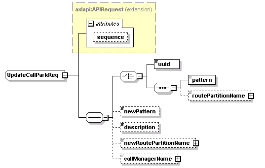

| diagram |
 |
| namespace |
http://www.cisco.com/AXL/API/10.5 |
| type |
extension of axlapi:APIRequest |
| properties |
|
| children |
uuid pattern routePartitionName newPattern description newRoutePartitionName callManagerName |
| used by |
|
| attributes |
| Name | Type | Use | Default | Fixed | Annotation | | sequence | xsd:unsignedLong | optional | | | |
|
| source |
<xsd:complexType name="UpdateCallParkReq">
<xsd:complexContent>
<xsd:extension base="axlapi:APIRequest">
<xsd:sequence>
<xsd:choice>
<xsd:element name="uuid" type="axlapi:XUUID"/>
<xsd:sequence>
<xsd:element name="pattern" type="xsd:string" nillable="false" minOccurs="1" maxOccurs="1"/>
<xsd:element name="routePartitionName" type="axlapi:XFkType" nillable="true" minOccurs="0" maxOccurs="1"/>
</xsd:sequence>
</xsd:choice>
<xsd:element name="newPattern" type="xsd:string" nillable="false" minOccurs="0" maxOccurs="1"/>
<xsd:element name="description" type="xsd:string" nillable="false" minOccurs="0" maxOccurs="1"/>
<xsd:element name="newRoutePartitionName" type="axlapi:XFkType" nillable="true" minOccurs="0" maxOccurs="1"/>
<xsd:element name="callManagerName" type="axlapi:XFkType" nillable="true" minOccurs="0" maxOccurs="1"/>
</xsd:sequence>
</xsd:extension>
</xsd:complexContent>
</xsd:complexType> |